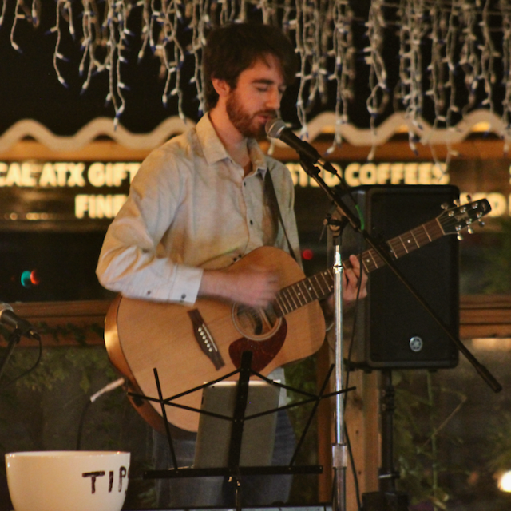
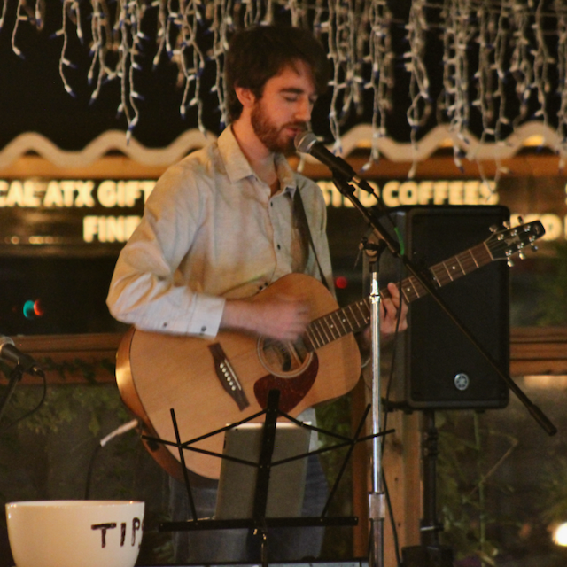
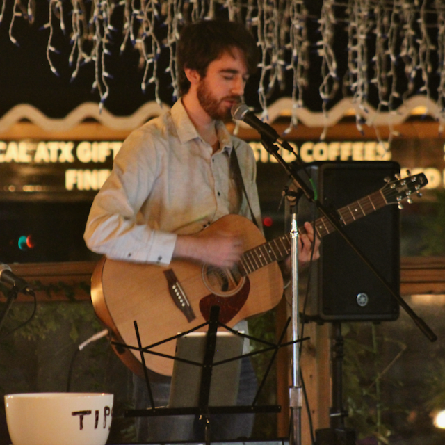

Dan Peters is a pianist and singer-songwriter based in Austin, Texas. His songs are full of memorable melodies, weaving folk and rock influences together with jazz harmonies. Dan's thought-provoking lyrics explore the wonders of our natural world, and what it means to be a human living within it.
Growing up in coastal Massachusetts, Dan started playing classical piano at a young age. Before long he found his way to jazz, drawn by the creative possibilities of improvisation. Dan continued to build on his musical education, completing a degree in Jazz Studies at Northwestern University in 2019. All the while Dan worked to refine his songwriting craft, composing and performing with several jazz and rock groups.
Dan’s two most recent releases embody the artistic voice that he has been developing for years.
In "The Birds Are Louder in Texas," a lush indie-folk tune with bluesy saxophone and Fender Rhodes, Dan sings about the unfamiliar birds outside his window after moving across the country.
In "Bottom of the Sea," Dan contemplates the mystery of the deep blue and the inner depths of our own minds, accompanied by fluid piano lines that evoke the movement of the ocean.
Dan can often be found performing songs like these at local Austin venues.
He is currently working on recording his forthcoming album, The Stuff of Deserts.
Mozart’s Coffee Roasters (Austin, TX)
Room 43 (Chicago, IL)
Carnegie Hall (New York, NY)
Salem Jazz and Soul Festival (Salem, MA)
Marblehead Festival of Arts (Marblehead, MA)
Chianti Jazz Club (Beverly, MA)
Shaolin Liu Performance Center (Rockport, MA)
